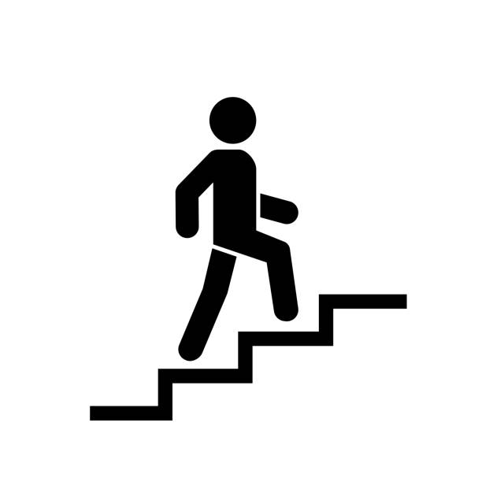

Exercise Description
Use the step walk machine by stepping up and down in a controlled manner, mimicking a stair climbing motion. Adjust the intensity and speed to match your fitness level. If no machine present, then you can use any natural staircase. Add dumbbells in your hand if required
Duration
Beginners: 20-30 minutes
Weights: 5kg dumbbell per hand
Video Implementation